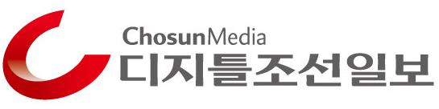

NFT·메타버스 전략·전망 소개 코로나19로 비대면 소통이 일상화되면서 가상과 현실을 넘나드는 '메타버스' 시대가 도래했다.
이에 [디지틀조선TV]는 오는 26일 '2022 포스트코로나 일어나라 대한민국' 컨퍼런스를 열고 새로운 사업 기회를 열어줄 가상시장에서의 먹거리를 집중 조명한다. 이번 컨퍼런스는 ‘디지틀조선일보’와 '디지틀조선TV' 주최·주관으로 올해 처음으로 열리는 행사로, 이날 오후 2시부터 5시까지 디지틀조선TV 스튜디오와 연사들의 집무실을 줌으로 연결해 진행한다.
행사는 디지틀조선TV 유튜브 채널로도 중계된다. ‘NFT 게임체인저 부상, 메타버스가 가져올 내일’이라는 주제로 마련된 '2022 포스트코로나, 일어나라 대한민국'은 ICT 분야에서 활발한 활동을 펼치는 메타버스 전문가의 생생한 현장 증언과 비즈니스 인사이트를 공유하는 자리다.
이날 컨퍼런스에서는 급부상하는 메타버스 특징과 주요 서비스를 살펴보고, 대체 불가능 토큰(NFT)라는 신기술이 가상 시장에서 기존 제조업체들과 시너지를 이룰 수 있는 기회를 잡을 수 있을지 모색해 볼 좋은 기회가 될 것이다. 디지틀조선TV는 이번 포럼을 통해 NFT와 메타버스가 가져올 내일을 철저히 대비할 수 있도록 국내 쟁쟁한 전문가들의 강연을 통해 집중 조명한다.
| 주최 |  |
| 일시 | 2022년 5월 26일 목요일 오후 2시 |
| 방식 | 줌(ZOOM) 비대면 대담 |